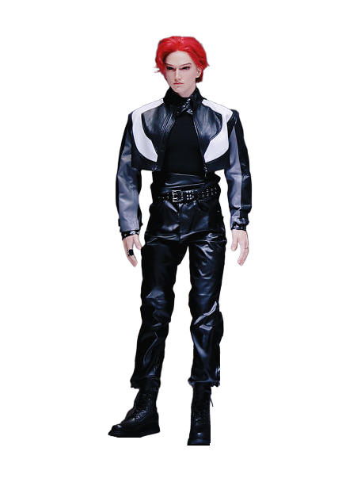

U1 Ultra
Other variants Male version · Female version
Figures below are for U1 Ultra.
A humanoid robot from China, first released 2026.
Sources retrieved: 14 October 2026 (A, B, C, D)
- Applications
- Indicative price
- Not stated
- Intended use, per the manufacturer
- The U1 Series is designed to support a wide range of consumer and commercial applications, including daily companionship, emotional support, lifestyle enhancement, and social assistance, as well as reception and hospitality services, elder care, psychological support, tourism and exhibitions, research and education, and premium domestic service applications.Source and note: Intended use, per the manufacturerD kyodonewsprwire.jp/release/202607011822 · Retrieved 14 October 2026

Manufacturer's own photo.
Photo from UBTECH's own press release, distributed by PR Newswire. Background removed.
Specifications
3/33 specifications disclosed 30 not stated
30 fields hidden
How to read the figuresShow guideClose
Not statedThe manufacturer states nothing about this field.NoStated: the robot does not have this.A marker with an asterisk (*) also carries a caveat.
Select a source marker for source details and notes.
Physical2/14 disclosed
Power0/5 disclosed
Sensing and autonomy1/6 disclosed
Payload and expansion0/3 disclosed
Commercial0/1 disclosed
Compliance & certifications0/4 disclosed
Against the field
Each strip holds every robot of this type in the guide that states the figure, one bar per group of values. Further right means a larger figure, not a better robot.
Degrees of freedom
62DoF
121 humanoids state degrees of freedom
5 state a higher figure, 106 a lower one. 1 more states exactly the same figure.
Max speed
10.8km/h6.71mphOur conversion from 3 m/s. The manufacturer does not state an imperial figure itself, so the conversion has no source of its own.
74 humanoids state a top speed
7 state a higher figure, 52 a lower one. 3 more state exactly the same figure.
Notes
UBTECH unveiled the U1 series at its 2026 Global Launch Event in Shenzhen on 30 June 2026.
UBTECH names three models in the U1 series: the half-body U1 Lite, the premium full-body U1 Pro and the high-dynamic full-body U1 Ultra.
UBTECH gives 88 degrees of freedom, a battery life of 2 to 4 hours and Wi-Fi connectivity for the U1 series as a whole.
UBTECH sets the pricing of the U1 series from 119,800 RMB.
The Standard reports a male and a female version of the U1 Ultra.
Sources
One line per source, not per figure: a source has one retrieval date.
- Aifanr.com/1670720Secondary. Retrieved 14 October 2026
- Bkyodonewsprwire.jp/release/202607082179Main source. Retrieved 14 October 2026
- Cthestandard.com.hk/innovation/article/336083/Ubtech-launches-million-dollar-bionic-humanoid-robotsSecondary. Retrieved 14 October 2026
- Dkyodonewsprwire.jp/release/202607011822Retrieved 14 October 2026